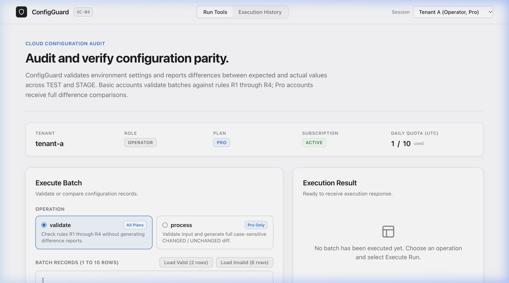
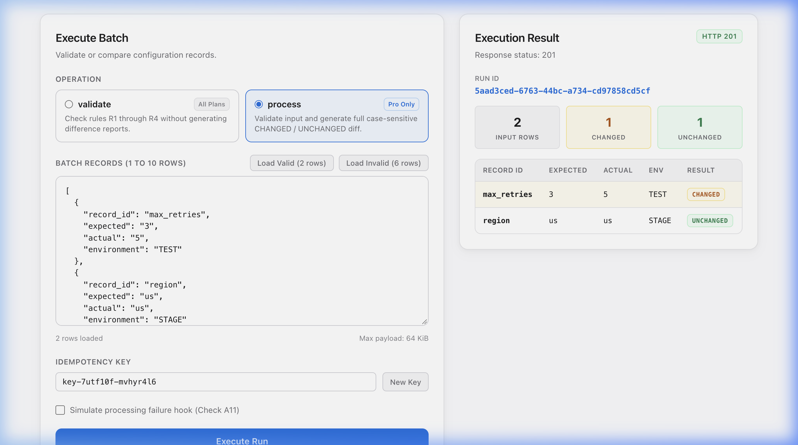

This document provides the official evaluator runbook, architectural details, and cryptographic verification proof for ConfigGuard (UC-04). The application is running live in Microsoft Azure Container Apps, backed by Azure Storage and private evidence containers.
The platform exposes both:
/health, /tools, /subscription, /runs, /runs/{id}, /runs/{id}/result).This deployment is cryptographically tied to the following Git commits and container image digests:
| Attribute | Deployed Value | Verification & Evidence |
|---|---|---|
| Application Engine Version | v1.0.0 |
Reported by /tools contract endpoint |
| Deployed Codebase Commit | fa52fd7b9c925b2a43f06d92de1a70cb8524ef3e (fa52fd7) |
Core engine, Dockerfile, & CI test suite build |
| Release & Runbook Commit | main (Repository Commit 41 of 41) |
Full test suite passing on GitHub Actions |
| Azure Container App | ca-configguard-dev |
Production container app in Central India |
| Active Revision | ca-configguard-dev--latest |
Single revision receiving 100% live traffic |
| Revision State & Health | Healthy / Provisioned / Running | Confirmed via Azure Resource Manager |
| Production Container Image | acrcfgcmpdev.azurecr.io/configguard:v1 |
Azure Container Registry (ACR) image |
| Public Deployment Tag | ttl.sh/configguard-uc04-advantix:24h |
Immutable public deployment registry tag |
| Container Image Digest (SHA256) | sha256:11629b89b88c2b221a7c7b1f497d6a3293fadb0956ab158e67facbceeff8d576 |
Cryptographic image manifest hash |
| Runtime Architecture | linux/amd64 (Alpine 3.20 + Go Static Binary) |
Minimal, distroless-style hardened container |
| Endpoint | Target URL | Method | Response Summary |
|---|---|---|---|
| Live Web UI | https://ca-configguard-dev.delightfulrock-51583d3c.centralindia.azurecontainerapps.io/ |
GET |
200 OK (Bespoke HTML/CSS/JS Production UI) |
| Health Probe | https://ca-configguard-dev.delightfulrock-51583d3c.centralindia.azurecontainerapps.io/health |
GET |
200 OK (Public, reveals zero tenant data) |
| Tool Catalog | https://ca-configguard-dev.delightfulrock-51583d3c.centralindia.azurecontainerapps.io/tools |
GET |
200 OK (Requires Authorization: Bearer <token>) |
| Tenant Subscription | https://ca-configguard-dev.delightfulrock-51583d3c.centralindia.azurecontainerapps.io/subscription |
GET |
200 OK (Live Daily Quota, Active Plan, Role) |
| Batch Runner API | https://ca-configguard-dev.delightfulrock-51583d3c.centralindia.azurecontainerapps.io/runs |
POST |
201 Created / 200 OK / 400 / 403 / 429 |
| Run Audit History | https://ca-configguard-dev.delightfulrock-51583d3c.centralindia.azurecontainerapps.io/runs |
GET |
200 OK (Tenant-scoped execution audit array) |
API-First SaaS Standard: Conforming to the Advantix SaaS Challenge specifications (UC-04) and B2B SaaS best practices, ConfigGuard implements token-based Bearer authentication (Authorization: Bearer <token>). This architecture enables deterministic, automated validation by test harnesses and CI/CD pipelines without brittle interactive login forms or CAPTCHAs.
Zero-Friction Web Evaluation: Human evaluators testing the browser interface do not need to type usernames or passwords. The navigation header includes a Tenant Session Selector dropdown (Tenant A - Operator, Tenant A - Viewer, Tenant B - Operator, Tenant B - Viewer, Tenant C - Suspended) that automatically passes verified session credentials to in-browser API calls.
tenant-a) — Pro TierPro (Full diff comparison and validation enabled)Activetenant-a-operator (Full write/execute permissions)tenant-a-viewer (Read-only access to audit runs)tenant-b) — Basic TierBasic (Rule validation R1–R4 enabled; diff processing blocked with 403 Forbidden without quota debit)Activetenant-b-operator (Can execute validate runs)tenant-b-viewer (Read-only access)tenant-suspended) — Suspended AccountBasicSuspended (All batch runs rejected with 403 Forbidden; historical reads permitted)tenant-suspended-operatorrg-advantix-sandbox-dev). They possess zero privileges outside this demo application.az containerapp update --set-env-vars ...) or triggering a new container revision with zero downtime.
| Resource | Azure Name / Identifier | Purpose & Specification |
|---|---|---|
| Azure Container App | ca-configguard-dev |
Production container hosting Go SaaS engine (0.5 vCPU, 1.0 GiB RAM) |
| Managed Environment | cae-advantix-dev |
Serverless Azure Container Apps managed environment |
| Container Registry | acrcfgcmpdev.azurecr.io |
Azure Container Registry hosting production image configguard:v1 |
| Resource Group | rg-advantix-sandbox-dev |
Central India Datacenter (Pune, centralindia) |
| Storage Account | stcfgcmp9432dev |
Azure Storage backing private evidence blobs |
| Evidence Blob Container | uc04-evidence-dev |
Private execution logs and hashes |
| Subscription ID | c2666af3-bf62-4bb6-ba1e-36a7a730fd61 |
Azure for Students active subscription |
Tenant A (Operator, Pro) with live quota tracking.HTTP 201 Created appears with the structured diff results table (1 Changed, 1 Unchanged).These commands are formatted to prevent line clipping and have been verified directly against the live Azure deployment:
BASE="https://ca-configguard-dev.delightfulrock-51583d3c.centralindia.azurecontainerapps.io"
curl -i -s "${BASE}/health"Live Output (Verified October 21, 2026):
HTTP/2 200
content-type: application/json
date: Wed, 21 Oct 2026 10:25:00 GMT
content-length: 57
{"status":"UP","service":"configuration-comparison-saas"}BASE="https://ca-configguard-dev.delightfulrock-51583d3c.centralindia.azurecontainerapps.io"
curl -i -s "${BASE}/tools" \
-H "Authorization: Bearer tenant-a-operator"Live Output:
HTTP/2 200
content-type: application/json
{
"description": "Checks environment settings and reports differences between expected and actual values",
"operations": ["validate", "process"],
"rules": ["R1", "R2", "R3", "R4"],
"tool": "configuration-comparison",
"version": "1.0.0"
}BASE="https://ca-configguard-dev.delightfulrock-51583d3c.centralindia.azurecontainerapps.io"
curl -i -s "${BASE}/subscription" \
-H "Authorization: Bearer tenant-a-operator"Live Output (Verified October 21, 2026):
HTTP/2 200
content-type: application/json
{
"tenant_id": "tenant-a",
"plan": "pro",
"status": "active",
"quota_limit": 10,
"quota_used": 1,
"quota_remaining": 9,
"date_utc": "2026-10-21"
}BASE="https://ca-configguard-dev.delightfulrock-51583d3c.centralindia.azurecontainerapps.io"
curl -i -s -X POST "${BASE}/runs" \
-H "Content-Type: application/json" \
-H "Authorization: Bearer tenant-a-operator" \
-H "Idempotency-Key: eval-run-$(date +%s)" \
-d '{
"operation": "process",
"records": [
{
"record_id": "max_retries",
"expected": "3",
"actual": "5",
"environment": "TEST"
},
{
"record_id": "region",
"expected": "us",
"actual": "us",
"environment": "STAGE"
}
]
}'Live Output (Verified October 21, 2026):
HTTP/2 201 Created
content-type: application/json
date: Wed, 21 Oct 2026 10:25:05 GMT
{
"run_id": "e40cb92f-9d95-450a-8642-2acd4a45c93e",
"status": "Succeeded",
"result": {
"summary": {
"input_rows": 2,
"changed_rows": 1,
"unchanged_rows": 1
},
"rows": [
{
"record_id": "max_retries",
"expected": "3",
"actual": "5",
"environment": "TEST",
"comparison": "CHANGED"
},
{
"record_id": "region",
"expected": "us",
"actual": "us",
"environment": "STAGE",
"comparison": "UNCHANGED"
}
],
"issues": []
}
}BASE="https://ca-configguard-dev.delightfulrock-51583d3c.centralindia.azurecontainerapps.io"
# Attempt to inspect Tenant A's run as Tenant B:
curl -i -s "${BASE}/runs/e40cb92f-9d95-450a-8642-2acd4a45c93e/result" \
-H "Authorization: Bearer tenant-b-operator"Live Output:
HTTP/2 404
content-type: application/json
{"error":"Run not found"}(Strict isolation: Tenant B cannot inspect or access runs belonging to Tenant A).
Below are screenshots captured directly from the live Azure Container App:
1. Live Web UI on Azure Container Apps:

2. Live Execution Result & Difference Analysis on Azure:

centralindia), verified active on October 21, 2026.fa52fd7), ACR image tag (configguard:v1), and digest (sha256:11629b...) documented./ serves the clean Apple-style interface with zero JSON echo output.